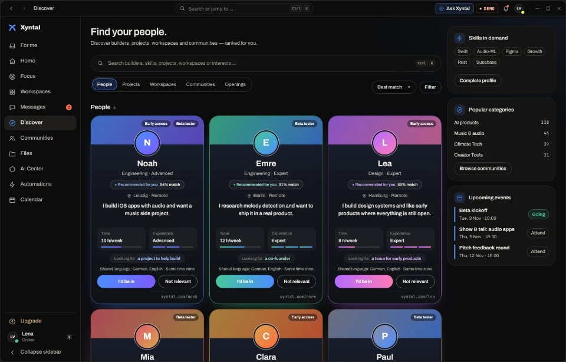

01 · Finden
Die richtigen Leute, mit Begründung.
- Entdecken
- Vorschläge ab 65 Punkten Passung, gewichtet über zehn Bereiche. Bei jedem steht, warum er passt.
- Xyntal-Karte
- Dein Vorhaben, deine Skills, deine Zeit und deine Art zu arbeiten. Daraus entstehen die Vorschläge.
- Communities
- Leute mit demselben Thema, auch bevor es ein Projekt gibt.
